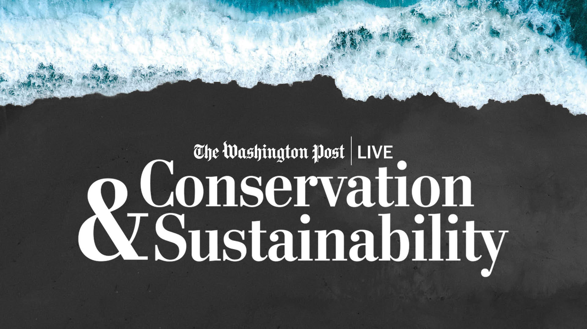
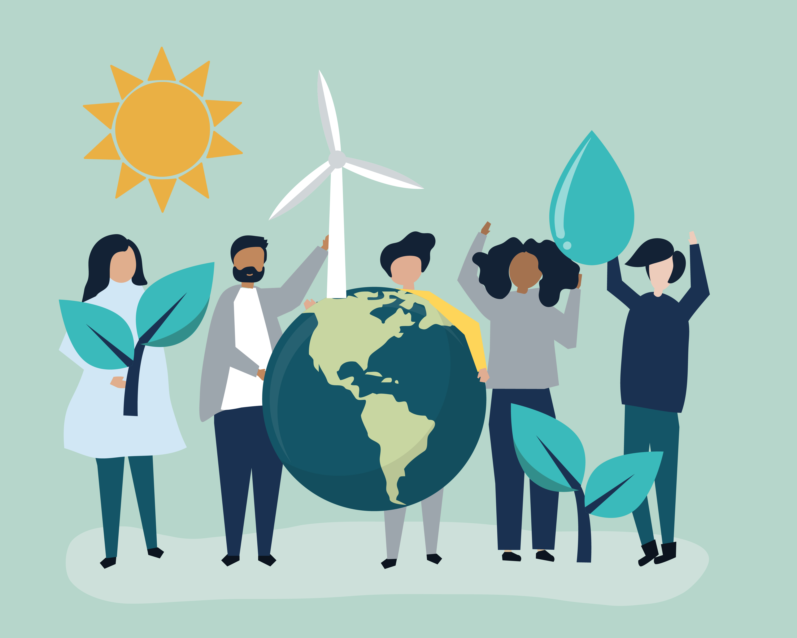
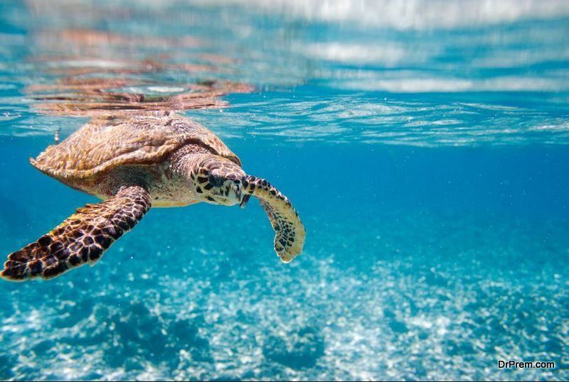
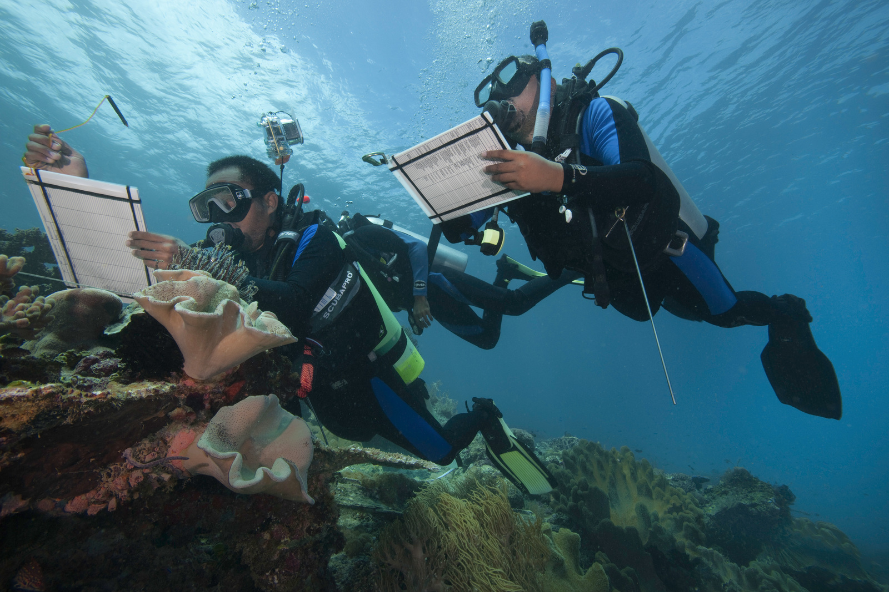

Conservation and sustainability
Introduction
In the face of escalating environmental challenges, the principles of conservation and sustainability have emerged as guiding beacons in our collective journey towards a more harmonious relationship with our planet. These concepts are not mere buzzwords; they represent a fundamental shift in our understanding of humanity's role within the intricate web of life on Earth. Conservation and sustainability are about recognizing the intrinsic value of nature and acknowledging our responsibility to safeguard it for present and future generations.
Importance of Conservation
Conservation lies at the heart of efforts to preserve the rich tapestry of life that thrives on our planet. It is about more than just protecting individual species or habitats; it is about safeguarding the intricate ecosystems that sustain all life forms. By conserving biodiversity, we ensure the resilience of ecosystems to withstand environmental pressures and adapt to changing conditions. Moreover, conservation efforts contribute to the preservation of ecosystem services, such as clean air, fresh water, and fertile soil, which are essential for human well-being and prosperity. Furthermore, conservation is a testament to our commitment to honoring and preserving the cultural heritage and traditional knowledge of indigenous communities whose lives are intertwined with the natural world.
Promoting Sustainability
Sustafor a paradigm shift in the way we interact with our environment, moving away from the unsustainable practices of the past towards a more regenerative and equitable model of development. Sustainable practices encompass all aspects of human activity, from food production and energy consumption to transportation and urban planning. Embracing renewable energy sources, adopting regenerative agricultural practices, and promoting eco-friendly modes of transportation are just a few examples of how we can integrate sustainability into our daily lives. Sustainability is not merely about mitigating environmental impact; it is about creating thriving communities that prioritize social equity, economic prosperity, and environmental stewardship.
Challenges and Solutions
Despite growing awareness of the urgent need for conservation and sustainability, we continue to face formidable challenges on multiple fronts. The relentless march of urbanization, the unchecked exploitation of natural resources, and the looming specter of climate change threaten to undo decades of progress. However, in the face of adversity, there is also hope. Solutions abound, from grassroots initiatives aimed at empowering local communities to global agreements that seek to address pressing environmental issues. Collaboration, innovation, and a shared commitment to collective action are essential ingredients in our quest for a more sustainable future. By working together, we can overcome the challenges that lie ahead and forge a path towards a world where nature thrives, communities prosper, and future generations inherit a planet that is healthier, more vibrant, and more resilient than the one we inherited.
